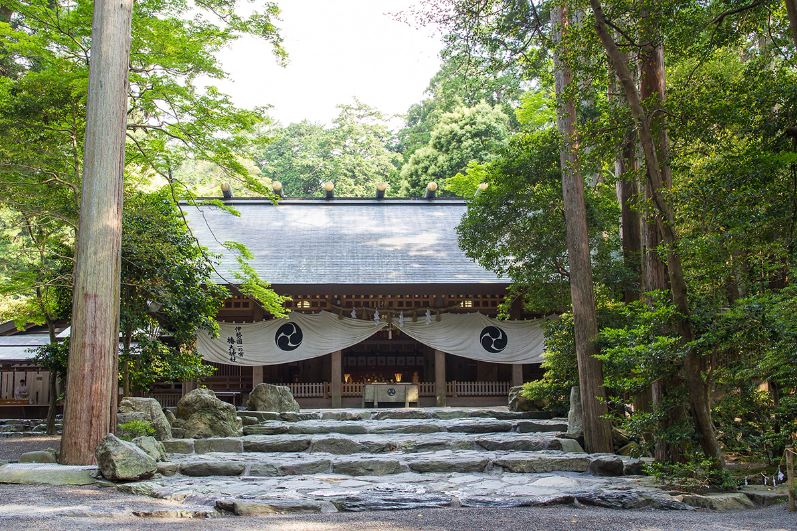
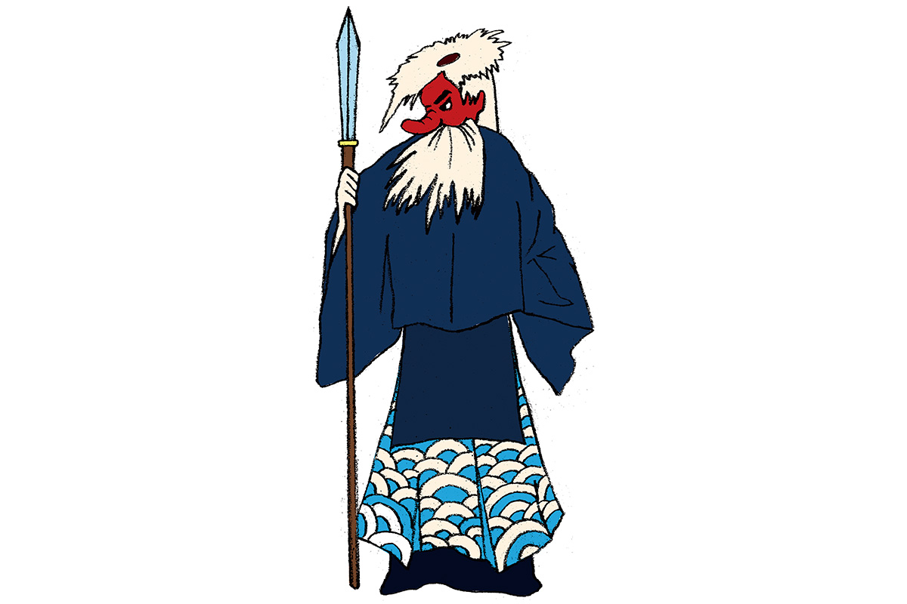
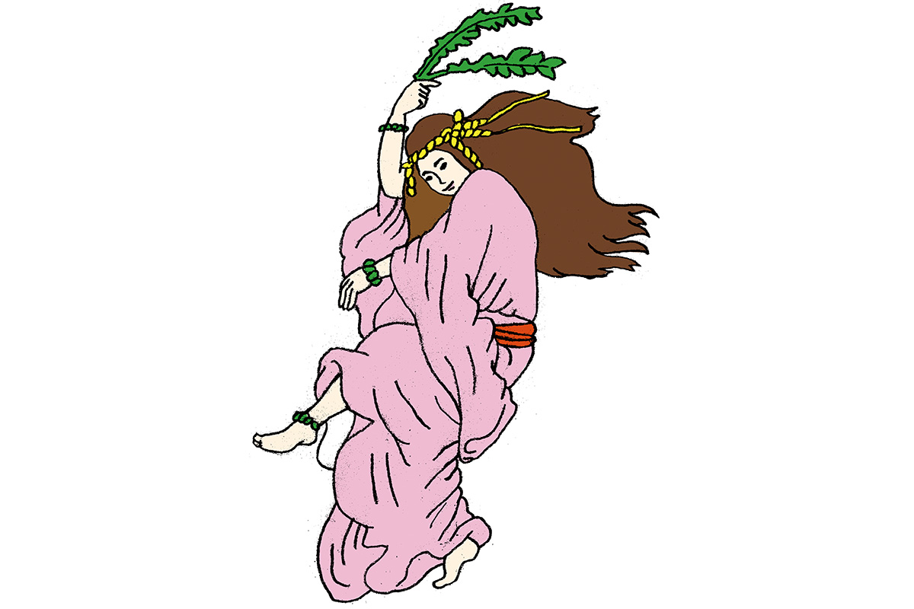
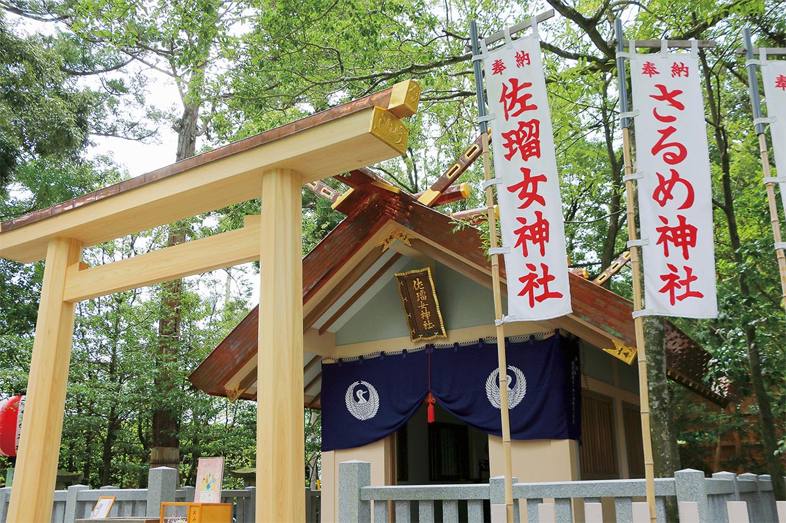

Префектура Миэ · Судзука и Исэ · мифы и святилища
Сарутахико и Амэ-но Удзумэ: боги, которые указывают путь, и святилища Миэ, где им молятся

В японских мифах у каждого бога своя роль. Сарутахико встречает путников на развилке и показывает дорогу, а его супруга Амэ-но Удзумэ своим танцем однажды вернула миру солнце. Обоим молятся в префектуре Миэ.
Миф
Проводник на небесной дороге
Когда Японии ещё не было, боги-прародители Идзанаги и Идзанами дали жизнь множеству богов, и каждый получил свою силу и своё дело. Одна из самых известных историй рассказывает, как Ниниги, внук богини солнца, спустился с неба на землю, чтобы править ею. Путь ему указывал Сарутахико: он сам вызвался быть проводником.

С тех пор Сарутахико почитают как бога, который открывает дорогу и освещает путь, по которому стоит идти. Поэтому его часто отождествляют с богами-хранителями дорог, которых ставили на развилках деревенских троп. Внешность у него необычная, и некоторые видят в нём исток образа тэнгу, горного духа с длинным носом, или даже бога, пришедшего в Японию с материка.
В древних хрониках его имя записано по-разному: в «Кодзики» он Сарутахико-но ками, в «Нихон сёки» Сарутахико-но микото. Главное, о чём его просят, это избавление от всех бед.
Где увидеть
Святилище Цубаки-оками в Судзуке
Святилище Цубаки-оками в городе Судзука очень старое: по преданию, его основали в 3 году до нашей эры. Главное божество здесь Сарутахико.
Рядом с главным святилищем есть второе, Цубакикиси, а на территории стоят малые святилища, среди них святилище Атаго и святилище в честь Коносукэ Мацуситы. Коносукэ Мацусита (1894–1989) основал компанию Panasonic и стал одним из самых известных предпринимателей Японии XX века.
Святилище Цубаки-оками
- Адрес
- префектура Миэ, Судзука, Ямамото-тё, 1871
- Телефон
- +81 59-371-1515
- Сайт
- tsubaki.or.jp
Миф
Танец перед небесной пещерой
Амэ-но Удзумэ известна как покровительница искусств. Однажды богиня солнца Аматэрасу спряталась в небесной пещере, и мир погрузился во тьму. Чтобы выманить её, Амэ-но Удзумэ пустилась в пляс, обнажившись до пояса, и восемь миллионов богов разразились хохотом и криками. Этот танец считают истоком кагура, священных танцев: в частности, традиции кагура Ивами.

Её называют первой танцовщицей, которую видела Япония, и ей до сих пор молятся люди сцены и самых разных искусств. Её просят об успехах в искусствах и мастерстве. Амэ-но Удзумэ считают супругой Сарутахико, поэтому их часто почитают вместе.
Где увидеть
Святилище Сарумэ в Исэ
Святилище Сарумэ стоит на территории святилища Сарутахико в Исэ. Здесь чтят Амэ-но Удзумэ, исполнившую танец кагура у небесной пещеры, и молятся ей об успехах в искусствах и о счастливом браке. Так супруги, проводник и танцовщица, оказываются в одном месте.

Святилище Сарумэ (на территории святилища Сарутахико)
- Адрес
- префектура Миэ, Исэ, Удзи-Урата, 2-1-10
- Телефон
- +81 596-22-2554